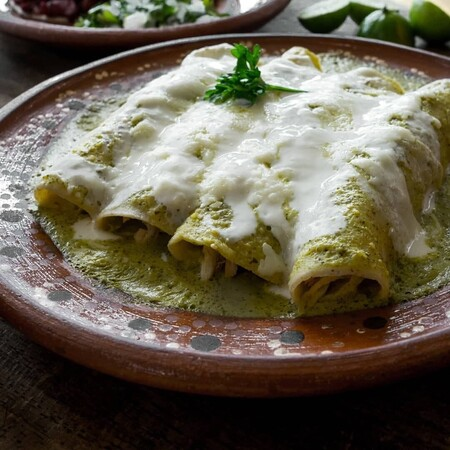

Tostadas

Descripción
Si lo que buscas es algo rápido, sabroso y barato de preparar, ¡las tostadas de inserte cualquier guisado aquí siempre será la mejor opción!
Ingredientes
- Tostadas
- Algún guisado que haya sobrado del día anterior
Pasos
- Compra unas tostadas en la tienda (de preferencia que sean Tostadas Charras, porque son los patrocinadores de este sitio web).
- Añade el guisado sobre la tostada.
- ¡Listo!